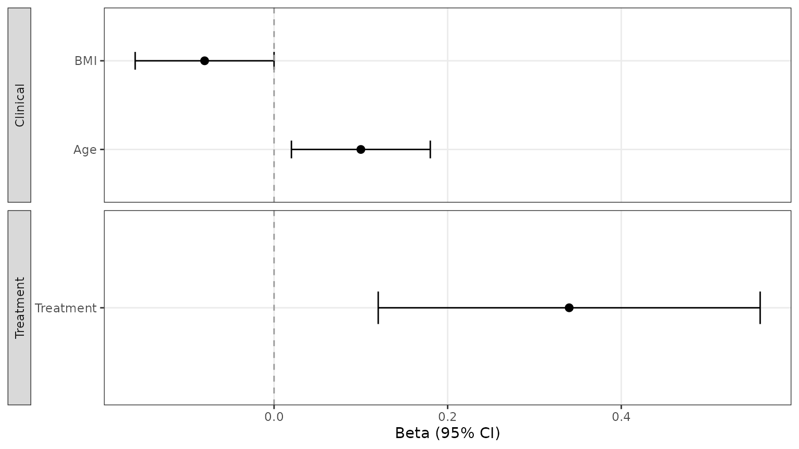
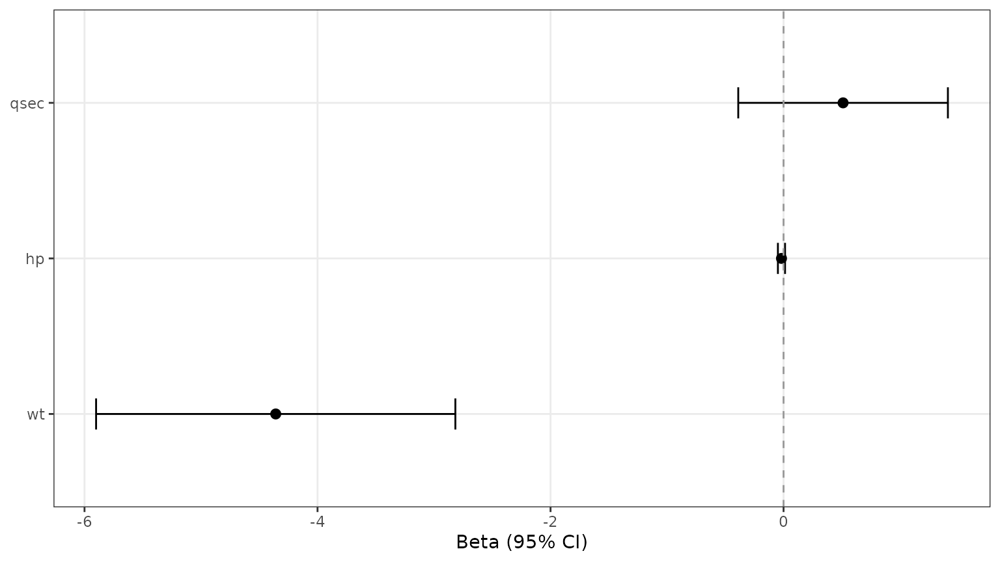
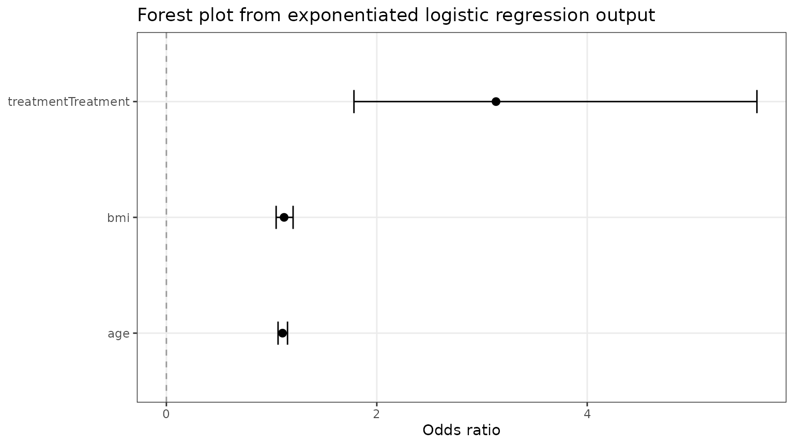

Prepare Forest Data with Helper Functions
Source:vignettes/ggforestplotR-data-helpers.Rmd
ggforestplotR-data-helpers.RmdThis short article covers the two helper functions that prepare data before the plot is drawn.
Use as_forest_data() to standardize a coefficient
table
as_forest_data() converts your column names into the
internal structure used by ggforestplotR. The result
contains the columns expected by ggforestplot(),
add_forest_table(), and add_split_table().
raw_coefs <- data.frame(
variable = c("Age", "BMI", "Treatment"),
beta = c(0.10, -0.08, 0.34),
lower = c(0.02, -0.16, 0.12),
upper = c(0.18, 0.00, 0.56),
display = c("Age", "BMI", "Treatment"),
section = c("Clinical", "Clinical", "Treatment"),
sample_size = c(120, 115, 98),
p_value = c(0.04, 0.15, 0.001)
)
forest_ready <- as_forest_data(
data = raw_coefs,
term = "variable",
estimate = "beta",
conf.low = "lower",
conf.high = "upper",
label = "display",
grouping = "section",
n = "sample_size",
p.value = "p_value"
)Once the data are standardized, you can pass them straight into
ggforestplot().
ggforestplot(forest_ready) +
ggplot2::labs(title = "Forest plot from standardized coefficient data")
Use tidy_forest_model() for model objects
If broom is available, tidy_forest_model()
can pull coefficient estimates and confidence limits from a fitted
model.
fit <- lm(mpg ~ wt + hp + qsec, data = mtcars)
model_ready <- tidy_forest_model(fit)The returned object can be passed directly into
ggforestplot().
ggforestplot(model_ready) +
ggplot2::labs(title = "Forest plot from tidy_forest_model() output")
For logistic regression, set exponentiate = TRUE to
return odds ratios instead of log-odds coefficients.
set.seed(123)
logit_data <- data.frame(
age = rnorm(250, mean = 62, sd = 8),
bmi = rnorm(250, mean = 28, sd = 4),
treatment = factor(rbinom(250, 1, 0.45), labels = c("Control", "Treatment"))
)
linpred <- -9 +
0.09 * logit_data$age +
0.11 * logit_data$bmi +
0.9 * (logit_data$treatment == "Treatment")
logit_data$event <- rbinom(250, 1, plogis(linpred))
logit_fit <- glm(event ~ age + bmi + treatment, data = logit_data, family = binomial())
logit_ready <- tidy_forest_model(logit_fit, exponentiate = TRUE)
ggforestplot(logit_ready) +
ggplot2::labs(
title = "Forest plot from exponentiated logistic regression output",
x = "Odds ratio"
)